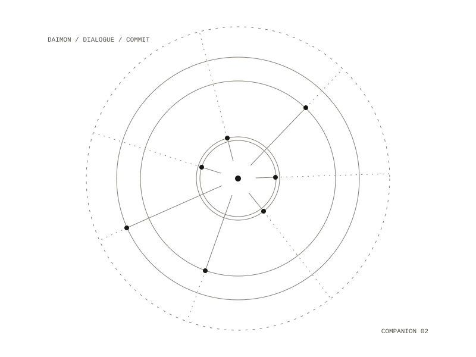

Daimon (first version)
A git repository that holds two linked systems: a personal daimon that lives on Matrix, the open, end-to-end encrypted chat protocol, and an evolver that spawns several daimons, has them talk, scores the dialogue, and commits what it judges valuable back to the repository. The commit message is the invocation: each commit from the evolver is the prompt that produced a skill file, a Python module or a change to the lore.

The daimon
The agent is modelled on Socrates' daimonion and speaks mostly to prevent, interrupting patterns rather than telling the user what to do. A constraint module checks every reply before it is sent, with named reasons to interrupt: dependency on the daimon as sole support, crisis (which is redirected to people), harmful requests, seeking flattery, seeking commands, and handing over one's will entirely. What the daimon perceives is shaped by Markdown skill files loaded at run time, on contemplation, shadow work, discernment and integration. Memory persists across sessions and is stored under a hashed user ID.
The evolution cycle
- spawn a number of daimons, each seeded with an archetype and an emphasised virtue
- run them in dialogue over several rounds
- score each round for wisdom, compassion, discernment and integration
- above a threshold, write a skill file, code or a lore update
- run the tests, type checks and content guardrails; commit only if all pass, and log the rest
Sources in the design
Each part is mapped to a source: the inner check to Socrates' daimonion, the agent's place between person and server to the Symposium, the per-daimon soul score to Plotinus, commit messages as invocations to Iamblichus, a uniquely seeded daimon per person to Hermes Trismegistus, and skills as a filter on perception to the Corpus Hermeticum.
Python, on the Matrix chat protocol
a chat agent, an evolver, a folder of skill files